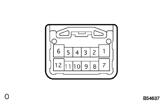

パワーウインドウシステム 助手席ドアガラスAUTO UP/DOWN作動しない(マニュアル作動する) |
参照）| 手順1 | ダイアグ出力確認 |
ダイアグノーシス出力コード点検
 |
助手席ドアガラスを操作したとき、マルチプレツクスネツトワークマスタスイツチの照明部の点灯状態を点検する。
| A | B | C |
|---|---|---|
| 不感帯位置ズレおよび不感帯位置ズレ/パルスセンサー同時異常 | パルスセンサー異常 | 正常 |
|
| ||||
|
| ||||
| A | |
| 手順2 | パワーウインドウレギユレータモータのリセット |
助手席パワーウインドウレギユレータモータのリセットを行う。（要領は参照）
ドアガラスが正常に作動するか点検する。
|
| ||||
| NG | |
| 手順3 | マルチプレックス ネットワーク スイッチASSY点検 |
マルチプレツクスネツトワークスイツチを取りはずす。（コネクタ接続状態）
IG ONにする。
|  |
SST（トヨタエレクトリカルテスター）を使用して、スイツチ操作時のコネクタ5端子（VCC）←→8端子間（SGND）の電圧を点検する。
|
| ||||
| OK | |
| 手順4 | パワーウインドウレギユレータモータ(パルスセンサー)点検 |
SST（トヨタエレクトリカルテスター）を使用してパワーウインドウ作動中、マルチプレツクスネツトワークスイツチの次の端子間の電圧を点検する。
| 端子番号 | 基準 |
|---|---|
| 3（PLS）←→8（SGND） | パルス波形を出力する |
| 4（PLS2）←→8（SGND） | パルス波形を出力する |
|
| ||||
| NG | |
| 手順5 | ワイヤハーネス点検 |
 |
マルチプレツクスネツトワークスイツチASSYおよびパワーウインドウレギユレータモータASSY LHのコネクタを切り離す。
ＳＳＴ（トヨタエレクトリカルテスター）を使用して、車両側コネクタの次の端子間の導通を点検する。
| 端子番号 （スイッチ←→モータ） | 基準 |
|---|---|
| 5（VCC）←→5（SSRB） | 導通あり |
| 3（PLS）←→6（PLS） | 導通あり |
| 4（PLS2）←→2（PLS2） | 導通あり |
| 8（SGND）←→4（E） | 導通あり |
|
| ||||
| OK | ||
| ||